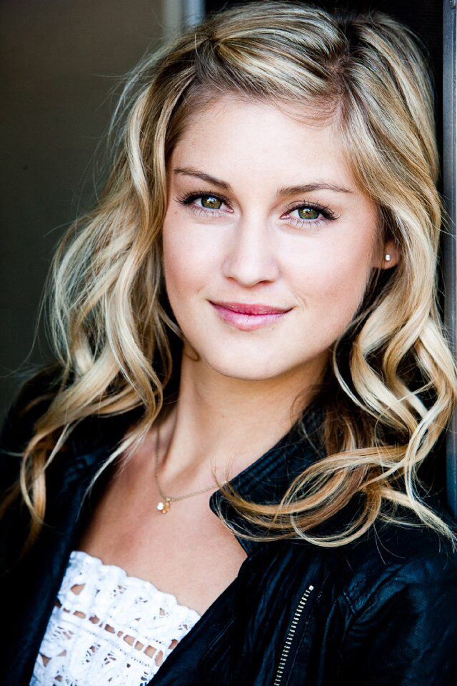
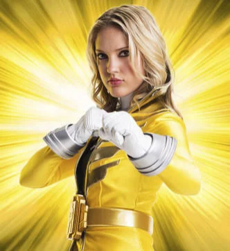
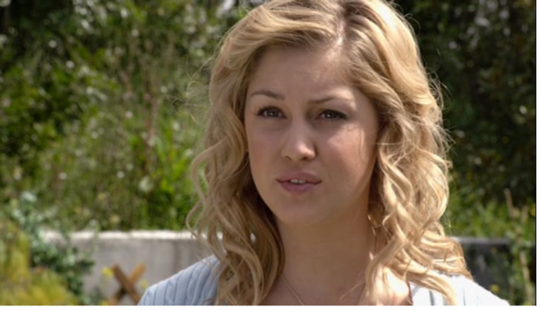
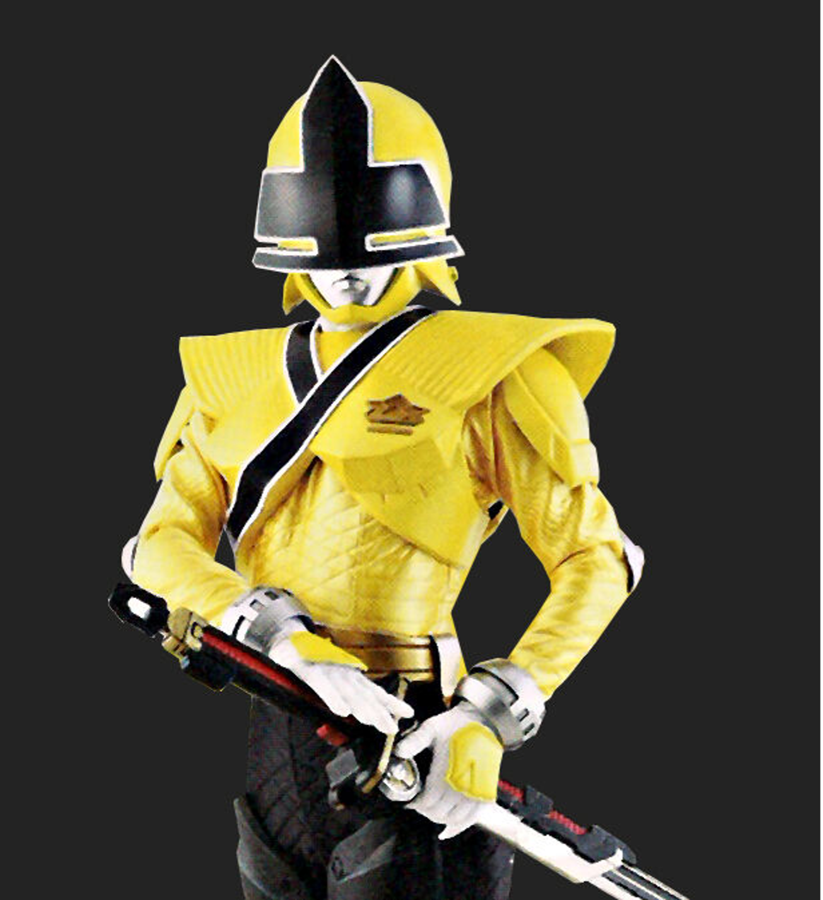
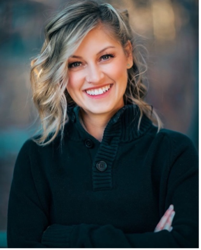
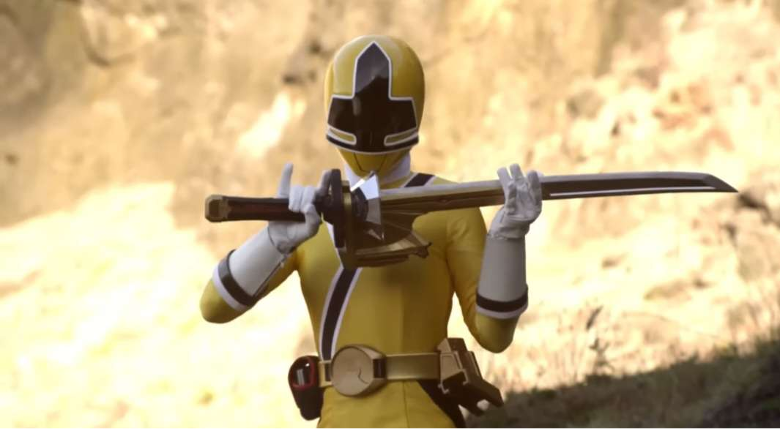

Who is Emily?
Emily is a sweet, innocent country girl who was never supposed to be the Yellow Samurai Power Ranger. Emily was said to be a crybaby and was often picked on by her peers. It was her older sister, Serena, who was destined for the squad, but an illness forced Emily to take her place. Although she is a bit of a fish out of water, the passion of the team and the bustle of the city inspires Emily to train hard and make her sister proud. Emily says that she,has a small crush on mike
, the green samurai ranger.
Gallery
     About the Actress
The Yellow Samurai Ranger was played by American model and actress, Brittany Anne Pirtle. She was born on December 27, 1989, in San Diego, California. Besides her role as the Yellow Samurai Ranger, she has also worked on many other hit shows and movies.
Brittany's Other Work
- Bring It On: Fight to the Finish
- Alvin and the Chipmunks: The Squeakquel
Emily in Power Rangers Franchise
| Yellow Ranger's Other Work | |
|---|---|
| Power Ranger Samurai | 2011 |
| Power Ranger Super Samurai | 2012 |
| Power Rangers Super Megaforce | 2014 |